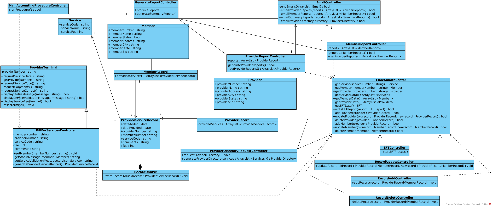
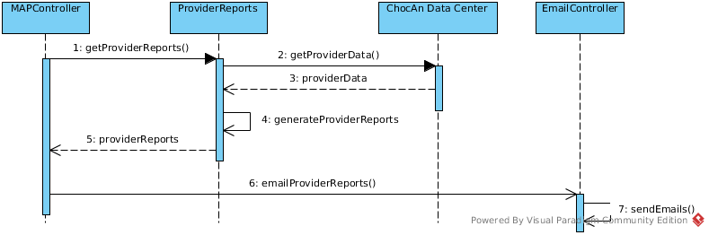
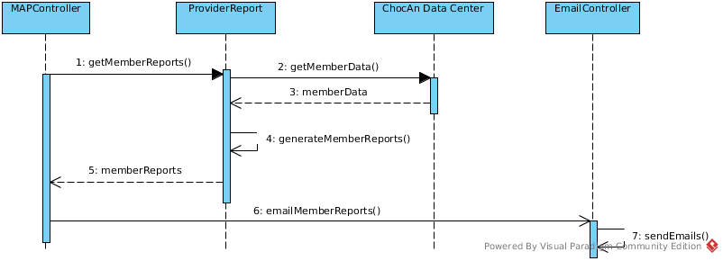
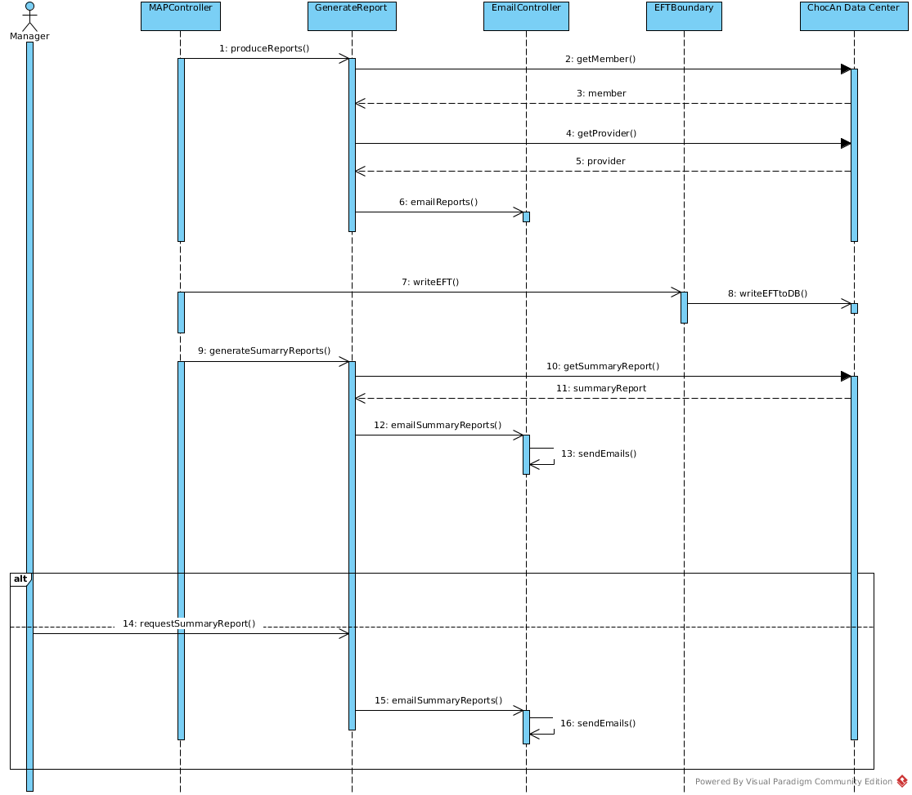
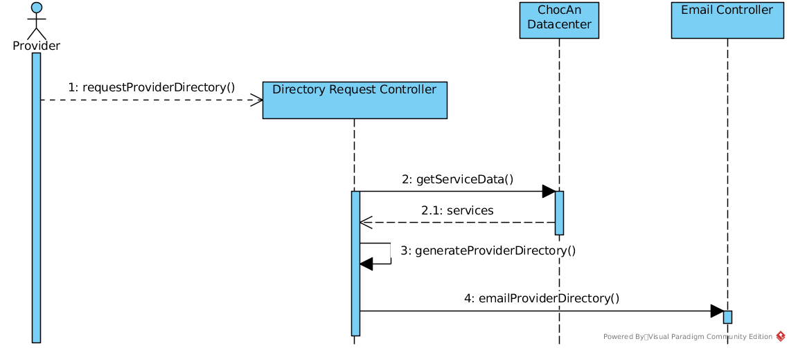
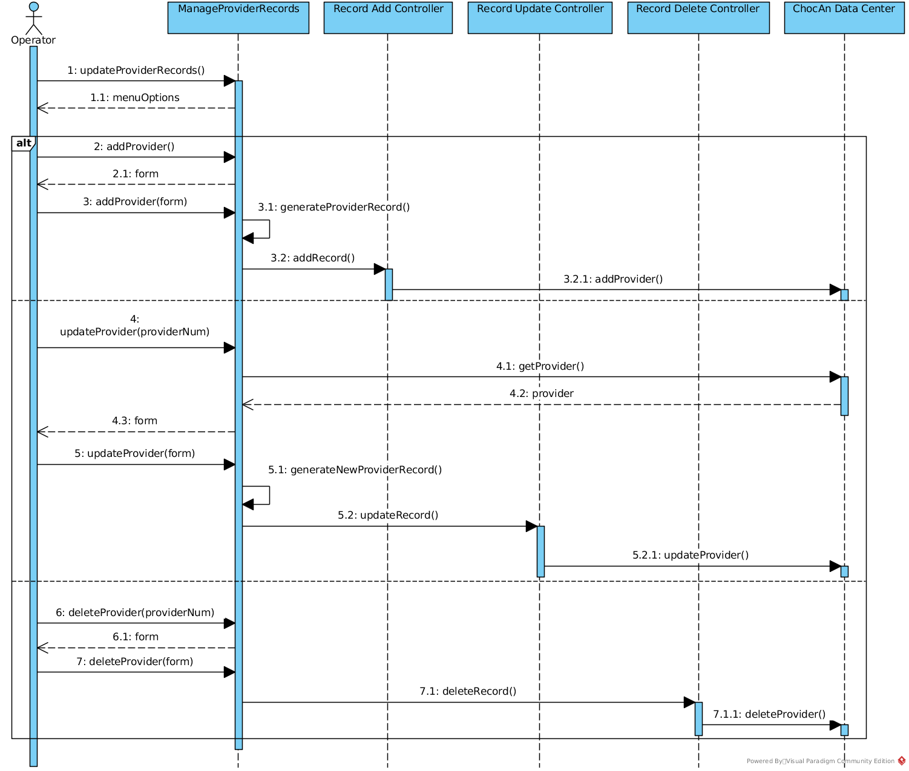

CS 200 Project 3 Team 11
| Hunter Allen | 11538059 | jhallen3@crimson.ua.edu | time spent = 3.5 hours |
| Sean Gillen | 11718859 | sdgillen@crimson.ua.edu | time spent = 5.7 hours |
| (submitter) | |||
| Brandon Hightower | 11662638 | bphightower@crimson.ua.edu | time spent = 2.0 hours |
| Ben Richey | 11528650 | btrichey@crimson.ua.edu | time spent = 0.0 hours |
Task Distributions
| Hunter Allen | Sequence diagrams | 25% |
| Sean Gillen | Report, sequence diagrams | 25% |
| Brandon Hightower | Sequence diagrams | 25% |
| Ben Richey | 25% |
1.1 Glossary
- Acme Accounting Services
- A third party organization responsible for financial procedures
- ChocAn Data Center
- Central computer dialed by the terminal to find member information
- Electronic Funds Transfer (EFT)
- The procedure by which funds are transferred to the provider's bank account
- Fee
- A sum paid by a member to ChocAn monthly or one time upon receipt of services
- Interactive Mode
- The state of the software at the ChocAn data center during the day that allows operators to update member and provider records.
- Main Accounting procedure
- A report generated by the ChocAn data center at midnight every Friday
- Member
- An individual with a member number and card who pays a monthly fee to ChocAn
- Member Card
- Encoded magnetic strip that stores all members data
- Member Number
- 9 digit number used to identify each member
- Member Report
- List of services provided to each member that is sent to each member during the main accounting procedure
- Member Status
- A binary value indicating whether the member has been suspended due to overdue fees
- Membership Records
- A database of members stored at the ChocAn data center, updated at 9 PM each evening by Acme Accounting Services or by operators in interactive mode
- Operator
- Actors at the ChocAn data center interacting with the software in interactive mode
- Provider
- A health care professional providing services to its members
- Provider Directory
- A database correlating the services and service codes accessible to each provider
- Provider Number
- A 9-digit number used to identify each provider
- Provider Report
- A list of services provided by each provider during the main accounting procedure
- Record
- EFT data written to disk during the main accounting procedure
- Service
- The services provided by providers that is identified by a services code and a name of up to 20 characters
- Service Code
- A 6-digit number used to identify services with names up to 20 characters
- Summary Report
- A report generated and given to the manager for accounts payable. A list of every provider to be paid that week, the number of consultations each provider had and his or her total fee for that week
- Terminal
- The access point for each provider to the system each terminal is equipped with a card reader
1.2 Use cases
Bill ChocAn for health care services provided to member
Activity Diagram Sequence DiagramTo bill ChocAn after a health care service has been provided to the member, the provider again passes the card through the card reader or keys in the member number. When the word Validated appears, the provider keys in the date the service was provided.
Member, provider, and ChocAn Data Center
- Member hands card to service provider
- Provider slides card through card reader on terminal or keys in member number
- Terminal dials ChocAn data center
- ChocAn data center verifies member number
Validatedappears on display- Provider keys in date service was provided in format
MM-DD-YYYY - Provider uses the Provider Directory to look up the appropriate six-digit service code corresponsing to the service provided
- Provider keys in the service code
- Software product then displays the name of the service corresponding to the code (up to 20 characters)
- Provider verifies that this is indeed the service that was provided
- Provider enters comments about the service provided (up to 100 characters)
- Software product looks up the fee to be paid for the service
- Software product writes a record to disk that includes the following fields:
- Current date and time (
MM-DD-YYYY HH:MM:SS) - Date service was provided (
MM-DD-YYYY) - Provider number (9 digits)
- Member number (9 digits)
- Service code (6 digits)
- Comments (up to 100 characters)
- Fee (up to $999.99)
- Current date and time (
- Software product displays the fee to be paid for the service on the provider's terminal
- Number does not exist
Invalid Numberdisplayed- End use case
- Member Status is in the
truestate (member is suspended)Member Suspendeddisplayed- End use case
- Code does not exist
Invalid Codedisplayed- Return to step 6
- Provider states service displayed is incorrect
- Return to step 6
Provider Directory Request
Activity Diagram Sequence DiagramProvider makes request to software for the provider directory, an alphabetically ordered list of service names and corresponding service codes and fees. The Provider Directory is sent to the provider as an e-mail attachment.
Provider and ChocAn Data Center
- Provider uses terminal to request provider directory
- Software reads service code and name
- Software generates provider directory with all services and respective service codes
- Software sends provider directory to provider as e-mail attachment
Main accounting procedure run
Activity Diagram Sequence DiagramAt midnight on Friday, the main accounting procedure is run at the ChocAn Data Center. It reads the week’s file of services provided and prints a number of reports. Each report also can be run individually at the request of a ChocAn manager at any time during the week.
Member, Provider, Manager, and ChocAn Data Center
- Main accounting procedure starts at midnight on Friday
- Read the last week's member and provider data
- Generate and send member reports containing the last week's data for each member
- Generate and send provider reports containing the last week's data for each provider
- Write EFT data to disk
- Generate summary report of accounts payable
- Send summary reports to managers
- Print total number of active providers, total number of consultations, and total fees to be paid
- Manager can request summary report at any time
Writing Electronic Funds Transfer (EFT)
Activity Diagram Sequence DiagramA record consisting of electronic funds transfer (EFT) data is then written to a disk; banking computers will later ensure that each provider’s bank account is credited with the appropriate amount.
ChocAn Data Center
- Read EFT data that has been collected
- Generate record consisting of EFT data
- Record consisting of EFT data written to disk
- Banking computers later ensure that each provider's bank account is credited with the proper amount
Generate and send provider reports
Activity Diagram Sequence DiagramList of services provided to members sent to each provider
Provider, Manager and ChocAn Data Center
- Dial ChocAn Data Center server
- Retrieve data for each provider that has billed ChocAn in last week and each service they have provided
- Provider name (25 characters)
- Provider number (9 digits)
- Provider street address (25 characters)
- Provider city (14 characters)
- Provider state (2 letters)
- Provider ZIP code (5 digits)
- For each service provided, the following details are required:
- Date of service (
MM–DD–YYYY) - Date and time data were received by the computer (
MM–DD–YYYY HH:MM:SS) - Member name (25 characters)
- Member number (9 digits)
- Service code (6 digits)
- Fee to be paid (up to $999.99)
- Total number of consultations with members (3 digits)
- Total fee for week (up to $99,999.99)
- Date of service (
- Generate summary report sent to manager for accounts payable listing for each provider to be paid that week:
- For each provider
- Provider name
- Number of consultations
- Total fee
- Number of providers who provided services
- Total number of consultations
- Overall fee total
- For each provider
- Generate a report for each provider with all data for that provider
- Send the summary report to the manager
- Send the provider reports to each provider
Generate and send member reports
Activity Diagram Sequence DiagramList of services provided sent to member from ChocAn
Member and ChocAn Data Center
- Dial ChocAn Data Center server
- Retrieve data for each member that received services in the last week and each service they have received
- Member name (25 characters)
- Member number (9 digits)
- Member street address (25 characters)
- Member city (14 characters)
- Member state (2 letters)
- Member ZIP code (5 digits)
- For each service provided, the following details are required:
- Date of service (
MM–DD–YYYY) - Provider name (25 characters)
- Service name (20 characters)
- Date of service (
- Generate a report for each member listing all data for that member
- Send each member their report
Provider records are added, deleted, or updated
Activity Diagram Sequence DiagramDuring the day, the software at the ChocAn Data Center is run in interactive mode to allow operators to add, delete, or update provider records
Operator and ChocAn Data Center
- ChocAn data center run in interactive mode
- Operator presented with user interface
Member records are added, deleted, or updated
Activity Diagram Sequence DiagramDuring the day, the software at the ChocAn Data Center is run in interactive mode to allow operators to add, delete, or update member records
Operator and ChocAn Data Center
- ChocAn data center run in interactive mode
- Operator presented with user interface
Add
Activity Diagram Sequence DiagramOperator at ChocAn can add new members or providers
Operator and ChocAn Data Center
- Operator chooses add function
- Operator fills out form
- Operator submits form to add new user
Delete
Activity Diagram Sequence DiagramOperator at ChocAn can delete new members or providers
Operator and ChocAn Data Center
- Operator chooses delete function
- Operator fills out form
- Operator submits form to delete new user
Update
Activity Diagram Sequence DiagramOperator at ChocAn can update new members or providers
Operator and ChocAn Data Center
- Operator chooses update function
- Operator fills out form
- Operator submits form to update new user
1.3 Use case diagram
Source: project1.vpp
2.1 System
Updating records, billing and sending reports will be computerized in the ChocAn server. All of this information is stored on drive in the ChocAn data center. For the ChocAn data center a server mainframe, and networking equipment will be needed. The software on the ChocAn server will interact with accounting services, EFT data software and communication software to push information to other systems. Operators will interact with the system at the data center while the software is in interactive mode. Providers and managers can interact with the software through remote terminals.
2.2 Object model
Source: project2.vpp
2.3 Dynamic model
Source: project2.vpp
Main activity diagram

Bill ChocAn for services

Send provider reports
Send member reports

Writing EFT
Main accounting procedure run
Provider Directory request
Provider records are added, deleted, or updated
Member records are added, deleted, or updated
Add
Delete
Update
3.1 Class diagram
3.2 Sequence diagrams
Source: Proj3.vpp
Bill ChocAn for services
Send provider reports
Send member reports
Writing EFT
Main accounting procedure run
Provider Directory request
Provider records are added, deleted, or updated
Member records are added, deleted, or updated
Add
Delete
Update

3.3 Coupling and cohesion
To verify your design, examine the coupling and cohesion issues . Discuss the coupling and cohesion of your design. Argument in a paragraph of 150 words (+/ - 10%) why your design is "good" .